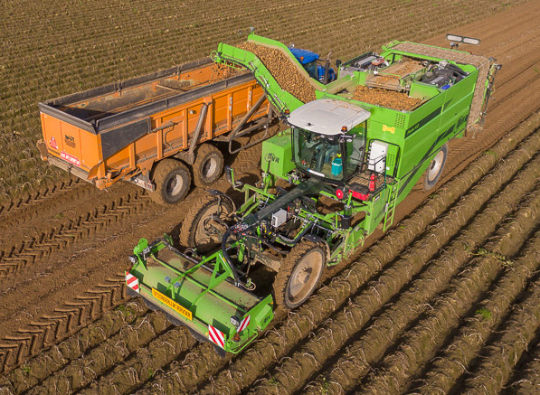

On a small scale, potatoes can be harvested using a hoe or spade, or simply by hand. Commercial harvesting is done with large potato harvesters, which scoop up the plant and surrounding earth. This is transported up an apron chain consisting of steel links several feet wide, which separates some of the earth. The chain deposits into an area where further separation occurs. The most complex designs use vine choppers and shakers, along with a blower system to separate the potatoes from the plant. The result is then usually run past workers who continue to sort out plant material, stones, and rotten potatoes before the potatoes are continuously delivered to a wagon or truck. Further inspection and separation occurs when the potatoes are unloaded from the field vehicles and put into storage.
Potatoes are usually cured after harvest to improve skin-set. Skin-set is the process by which the skin of the potato becomes resistant to skinning damage. Potato tubers may be susceptible to skinning at harvest and suffer skinning damage during harvest and handling operations. Curing allows the skin to fully set and any wounds to heal. Wound-healing prevents infection and water-loss from the tubers during storage. Curing is normally done at relatively warm temperatures (10 to 16 °C or 50 to 60 °F) with high humidity and good gas-exchange if at all possible.
